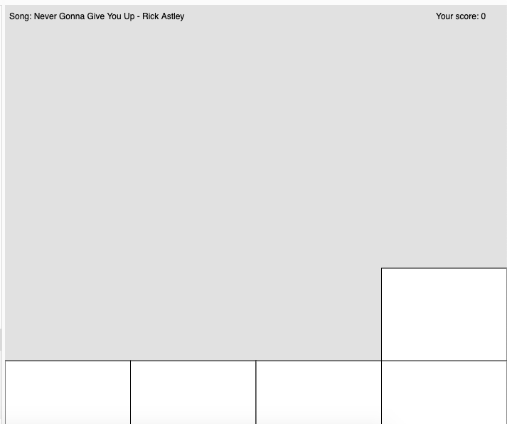

MP-3 Writeup
Overview and Usage:
CTB stands for "Catch the Beat" and is a rhythm game where you catch the objects to the rhythm of the music. It is partly inspired by osu!catch. In this game, circles fall and you must move your player left and right to catch the circles to the beat. Miss one and it's game over!
How to play:
Click anywhere on the loading screen to start > Use the left and right arrow keys to move the player circle at the bottom > Catch the falling circles to earn points! Enjoy the music!
Click here to access the game
Click here for the repo
Development Process:
1. I set up my p5js file with the p5play template
2. I created the player sprite (which moves horizontally)
3. I created the falling circles sprites (which add to the score)
4. I added the loading and game over screens
5. I called the screens by creating a mousePressed() function
6. I added music and adjusted that to play when the game started
7. Deployed my game to GitHub
WIP Screenshots

Issue Deep-Dive:
One issue I encountered was that the score would not update when the circle was collected by the player.
I originally used circle.remove() to remove the circles if they overlapped the player. I was under the impression the player would've "collected" the circle, but the score stayed at 0.
I fixed this by removing the circle.remove() line, and replaced it by resetting the y-value and x-value of the circle to generate a new one that falls. Removing the circle would've broken the loop, hence why the score didn't update.
Ideas and Future Work:
- Allow user to choose a song (and have background change according to song)
- Create Easy, Normal, and Hard modes, as most rhythm games currently have
- Change the pattern for notes to match closely to the beat (the notes fall at a constant pace in this game)
- Allow user to pause the game and resume at a click of a button
Kudos:
https://learn.nashvillesoftwareschool.com/blog/2023/02/02/building-a-game-with-p5-part-3-rhythm-game
https://editor.p5js.org/ehersh/sketches/Hk52gNXR7
https://p5play.org/learn/